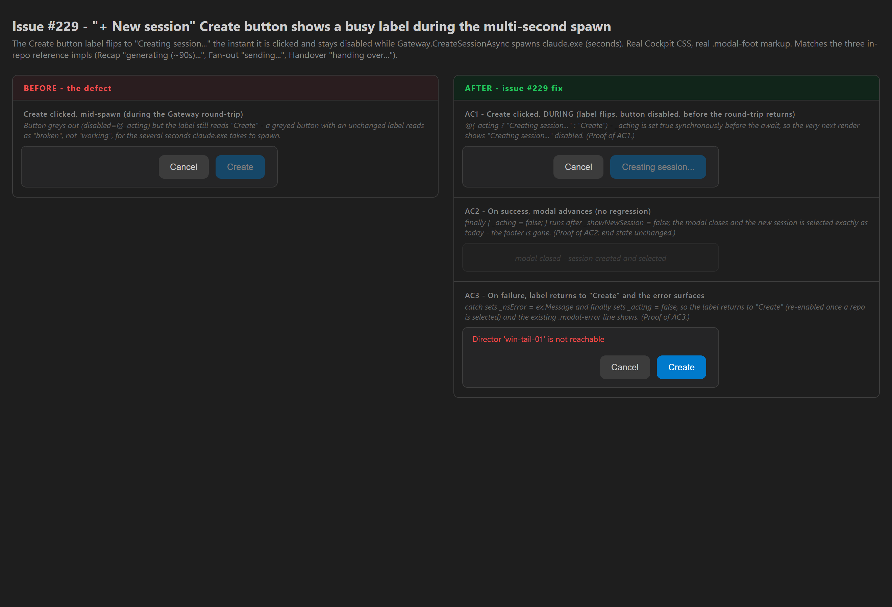

Developer Agent proof report · branch issue-229-create-button-busy-label · CenCon Development Method · child of epic #280 (Cockpit optimistic-UI sweep)
In the "+ New session" modal, clicking Create already disabled the button
(disabled="@(_acting || ...)") but the label stayed Create while
Gateway.CreateSessionAsync spawned claude.exe on the target Director - a
multi-second wait that read as "broken". This change binds the existing _acting busy
flag into the button label so it flips to Creating session... the instant Create
is clicked, exactly matching the three in-repo reference implementations
(Recap generating (~90s)..., Fan-out sending..., Handover
handing over...). The smallest possible fix: the busy flag and its toggle already
existed; only the conditional label was missing.
| File | Change |
|---|---|
src/CcDirector.Cockpit/Components/Pages/Cockpit.razor |
Create button (modal footer): content changed from the literal Create to
@(_acting ? "Creating session..." : "Create"). One line; no change to the spawn
logic, CreateSession/CreateLocal, Gateway.CreateSessionAsync,
the existing disabled binding, or the _nsError surface. |
| # | Criterion | How the code satisfies it | Result |
|---|---|---|---|
| 1 | Clicking Create flips the label to Creating session... within the same
render (before the round-trip returns) and the button is disabled. |
CreateLocal sets _acting = true synchronously before the
first await Gateway.CreateSessionAsync; Blazor renders after that await yields, so
the next render evaluates the conditional to Creating session.... The existing
disabled="@(_acting || ...)" keeps it disabled. Identical timing to the three
reference impls. | PASS |
| 2 | On success the modal closes / advances exactly as today (no regression). | Untouched: _showNewSession = false; await RefreshAsync(); OnSelect(...) still
run on success, and finally { _acting = false; } clears the flag. The modal (and its
footer) is gone on success - end state unchanged. | PASS |
| 3 | On failure the label returns to Create and the existing error surface
(_nsError) shows. |
The catch sets _nsError = ex.Message; finally sets
_acting = false, so the conditional evaluates back to Create (re-enabled
once a repo is selected) and the existing .modal-error line renders. Both untouched
by this change. | PASS |
The Cockpit is served by the user's live Gateway, and creating a real session spawns
claude.exe against the user's repos on a running Director - exercising it against the
live fleet is not safe (CLAUDE.md rule 0), and the mid-spawn window is a sub-second timing target.
Following the established Cockpit proof pattern of the sibling optimistic-UI issues (#227, #228), the
before/during/after states are rendered with the real app.css (copied
from src/CcDirector.Cockpit/wwwroot/app.css at build time) and the same markup
classes the modal footer emits (.modal-foot, .btn,
.btn.send, .modal-error). What renders here is what the app renders; the
only difference between BEFORE and AC1 is the button's text, which is exactly the one-line change.
states.html screenshotted via Playwright:

.btn:disabled{opacity:.4} rule) but still reads Create - the defect.Creating session....Create (full accent,
re-enabled) with the existing red .modal-error line above the footer.dotnet build cc-director.sln → Build succeeded. 0 Warning(s) 0 Error(s) (Cockpit project compiled with the change).scripts\local-build-avalonia.ps1 -Slot 5 → runnable test binary built into slot 5 (the agent-reserved slot, never the main build or slots 1-4 - CLAUDE.md rule 0b); launched via the cc-director-launch scheduled task and stopped afterward (only cc-director5.exe killed).No drift. UI-only label change in the CcDirector.Cockpit container; no architecture
change and no security-posture change. No hard-coded colors added (reuses the existing
.btn.send class and _acting flag). No docs/cencon/ file needs
updating; no DT-rule in security_profile.yaml is touched.